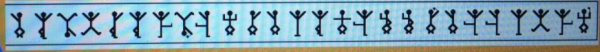
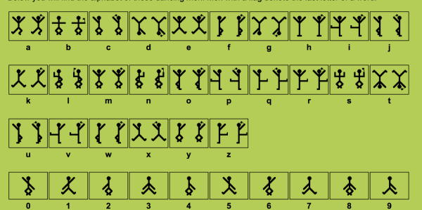

Solution to 1o57's Hackaday Challenge
So on October 6th 1o57 (who creates the DEF CON badge challenge) gave a fantastic talk at the hackaday 10th anniversary which you should totally watch:
(go ahead, I’ll wait)
You might have noticed some random text in the slides, but you might not have. Anyway here are the slides
@hackaday pic.twitter.com/YNNoeJDeSU
— LosT/李智上 (@1o57) October 5, 2014
@hackaday pic.twitter.com/YNNoeJDeSU
— LosT/李智上 (@1o57) October 5, 2014
@hackaday pic.twitter.com/ss3WEzndR9
— LosT/李智上 (@1o57) October 5, 2014
@hackaday pic.twitter.com/NVxwlBEe2y
— LosT/李智上 (@1o57) October 5, 2014
@hackaday pic.twitter.com/oE64HPUqtx
— LosT/李智上 (@1o57) October 5, 2014
@hackaday pic.twitter.com/LMXhiJj5mu
— LosT/李智上 (@1o57) October 5, 2014
@hackaday pic.twitter.com/Tb42KBb8bl
— LosT/李智上 (@1o57) October 5, 2014
@hackaday pic.twitter.com/UhXCk0tyLX
— LosT/李智上 (@1o57) October 5, 2014
@hackaday pic.twitter.com/bIDNsV3D5g
— LosT/李智上 (@1o57) October 5, 2014
@hackaday pic.twitter.com/zqarmBmwNd
— LosT/李智上 (@1o57) October 5, 2014
And here is a copy of all the letters on each of the slides
DO
XIYL
DCYV
DKIK
NKUM
KRYD
NBYG
ONYM
NXOC
on one line:
DOXIYLDCYVDKIKNKUMKRYDNBYGONYMNXOC
Hrmmm, well the first thing you might try is a Caesar cipher. In the video you’ll notice that 1o57 repeatedly mentions that it’s Hackaday’s TENTH anniversary, so we should try decrypting the above string with a key of 10. (here’s a tool do to that)
TENYOBTSOLTAYADAKCAHOTDROWEDOCDNES
(side note: I cheated on this step by using an automated caesar cipher breaker)
Hrmmm that still looks like nonsense, but it does start with the word ten, so we’re probably close...
Wait a second! The string is backwards! It’s not ten it’s net!
SENDCODEWORDTOHACKADAYATLOSTBOYNET
or cleaned up
Send codeword to hackaday@lostboy.net
Ok, well now we know where to send the codewords. The only unsolved part of the puzzle is this last slide
@hackaday pic.twitter.com/01Magsvu1u
— LosT/李智上 (@1o57) October 5, 2014

WTF are those things?! Now fans of Sherlock Holmes may recognize these, but at the time I did not, so I went to my best friend Google to try and figure it out. I tried lots of search terms like “stickman code" (and variants on that) and “semaphore" (since I thought maybe the positions on the flags was significant), until I came across this page:
http://www.geocachingtoolbox.com/index.php?lang=en&page=dancingMen
which features a code called the Dancing Men!
This code comes from a Sherlock Holmes novel called The Adventure of the Dancing Men

And we can use the above image to decrypt the band, which decrypts to:
codeword psychobilly ciphers
Thanks for the fun puzzle 1o57!